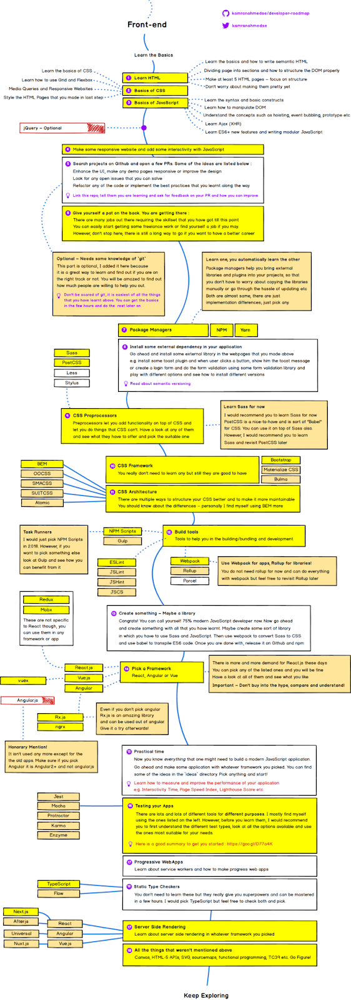
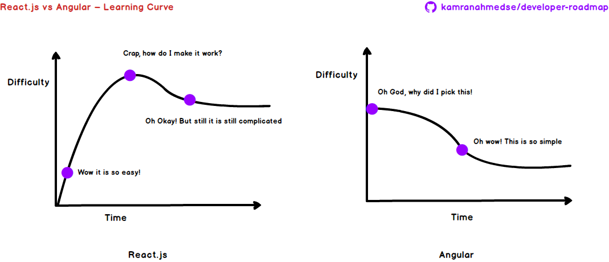

Как стать фронтенд-разработчиком в 2018 году
Камран Ахмед, автор материала, перевод которого мы сегодня публикуем, говорит, что занимается фуллстек-разработкой уже 5 лет и в настоящее время работает на должности ведущего инженера в компании tajawal. Там ему приходится заниматься многими вещами. Ему, по долгу службы, надо быть в курсе того, что происходит в мире веб-разработки, кроме того, одна из его задач заключается в том, чтобы поддерживать знания и навыки других разработчиков в хорошем состоянии. По его словам, наблюдение за развитием технологий — это не только его работа, но и хобби. Ему приходилось видеть сложности, с которыми сталкиваются начинающие программисты (и опытные — тоже), когда речь заходит об оперативном освоении новшеств. Камрану, в прошлом году, часто приходилось отвечать на вопросы о том, в чём нужно ориентироваться для того, чтобы оставаться современным и востребованным программистом. В результате он, для того, чтобы помочь себе и другим, решил подготовить схемы, ссылки на которые отвечали бы на большинство вопросов, которые ему обычно задают.
Изначально эти схемы представляли собой нечто вроде списка рекомендаций по инструментам, но недавно Камран решил привести их в порядок: структурировать, добавить подробностей, и оформить их в виде пошагового плана действий, который дал бы всем желающим возможность понять — чем и в каком порядке нужно заниматься для того, чтобы стать современным и востребованным веб-программистом. Работа над схемами по бэкенд-разработке и DevOps всё ещё продолжается, а вот пошаговый план действий для фронтенд-разработчиков уже готов. О нём Камран расскажет в этой статье.
Обзор
Прежде чем я расскажу о различных частях предлагаемого здесь плана действий, мне хотелось бы сделать оговорку. Цель этого плана заключается в том, чтобы дать вам общее представление о том, что происходит в современном мире фронтенд-разработки, и рассказать о порядке освоения технологий на тот случай, если вам это нужно. Цель моей схемы заключается не в том, чтобы призвать вас к изучению чего-то такого, что переживает сейчас пик популярности, возможно, недолгий. Вам нужно развить в себе понимание того, почему в некоторых случаях определённый инструмент предпочтительнее всех остальных, и помнить о том, что если о чём-то говорят буквально на каждом углу, это — не обязательно лучшее средство для решения некоей задачи.
Теперь приступим к делу. Собственно говоря, вот — план развития фронтенд-разработчика, о котором я говорил выше.

Сейчас мы поговорим об этой схеме, рассмотрим основные шаги, которые нужно предпринять программисту, который хочет заниматься разработкой фронтенда в современных условиях. Первое, что стоит освоить такому программисту — это основы HTML, CSS и JavaScript.
Изучение основ HTML
HTML — это то, что позволяет структурировать веб-страницы. Это — что-то вроде человеческого скелета, который формирует основу нашего тела. Первый шаг, который следует предпринять тому, кто хочет стать фронтенд-программистом — это изучение синтаксиса HTML и его возможностей. В ходе учёбы особое внимание надо обратить на следующее:
- Основы HTML и правила написания HTML-кода.
- Способы разделения страниц на части и правильное структурирование DOM.
Задание
После того, как вы освоите основы HTML, создайте как минимум 5 HTML-страниц. Я порекомендовал бы выбрать любой веб-сайт — например, страницу профиля на GitHub, или страницу входа в Twitter, и воссоздать её, обращая особое внимание на структурирование элементов страницы. То, что получится, будет не таким уж и красивым, но беспокоиться пока об этом не стоит. Самое главное сейчас — структура.
Изучение основ CSS
Теперь, после того, как вы узнали правила создания скелетов страниц, пришло время обтянуть эти скелеты кожей, украсить их. Технология CSS, или каскадные таблицы стилей, используется для придания страницам привлекательного вида. Вот на что стоит обратить внимание, знакомясь с CSS:
- Синтаксис и свойства CSS.
- Блоковая модель, разработка макетов с использованием технологий Grid и Flexbox.
- Разработка отзывчивых сайтов с использованием медиа-запросов.
Задание
После того, как вы освоите основы CSS, займитесь стилизацией созданных ранее страниц. Например, если вы написали HTML-код, воссоздающий структуру страницы профиля на GitHub — сделайте с помощью CSS так, чтобы ваша разработка выглядела в точности как настоящая страница профиля. Стилизуйте все пять страниц, созданных на предыдущем шаге.
Изучение основ JavaScript
JavaScript — это технология, которая позволяет сделать HTML-страницы интерактивными. Например, средствами JavaScript создают все те слайдеры, всплывающие окна, уведомления, которые вы видите на веб-сайтах. JS даёт возможность перезагрузки частей страниц без необходимости перезагрузки страниц целиком. На данном шаге вам нужно освоить основы JavaScript и приготовиться к самому интересному. Изучая JS, обратите внимание на следующее:
- Изучите синтаксис и базовые конструкции языка.
- Освойте методики работы с DOM средствами JS, то есть, например, разберитесь с тем, как добавлять элементы на страницу и удалять их с неё, как работать с классами элементов, как применять CSS-стили.
- После освоения основ разберитесь с более продвинутыми вещами, такими, как области видимости, замыкания, поднятие функций, всплытие событий, и так далее.
- Разберитесь с тем, как выполнять HTTP-запросы из JS-кода с использованием технологий XHR или Ajax. Именно Ajax позволяет выполнять какие-либо действия, обычно требующие перезагрузки страниц, не перезагружая их целиком.
- Далее — уделите время изучению новых возможностей языка, того, что появилось в ES6+. ES6 — это версия JavaScript, в которой имеется множество интересных обновлений, таких, как классы, различные способы объявления переменных. Тут появились новые методы массивов, средства для конкатенации строк, и так далее. Большинство материалов по ES6, которые вам попадутся, будут использовать Babel в процессе разъяснения особенностей новых возможностей языка. Babel — это транспилятор, он конвертирует, условно говоря, «новый» JavaScript-код в «старый». Нужно это для того, чтобы новый код работал в старых браузерах. Пока, однако, не обращайте внимания на Babel. Ваша задача — понять основы JS и научиться пользоваться этим языком в современных браузерах. Ниже мы ещё поговорим о ES6.
На данном этапе освоения веб-технологий вы уже должны почувствовать, что кое-что знаете и начинаете ощущать вкус современного фронтенда. Кроме того, тут вы можете себя поздравить, так как HTML, CSS и JavaScript — это очень важно, это — база, на которой строится всё остальное, и вы освоили эту базу и готовы двигаться дальше.
Стоит ли изучать jQuery?
В былые времена слово «jQuery» было у всех на устах, и у такого положения дел были веские причины. Это — мощная библиотека, которая основана на JavaScript и позволяет решать множество задач, не заботясь об особенностях различных браузеров. Все эти особенности учтены при разработке библиотеки. Но теперь дни бешеной популярности jQuery прошли, эту библиотеку уже не так активно используют для новых проектов, однако, кое-кто ей всё ещё пользуется. Изучать jQuery необязательно, но освоить эту библиотеку несложно, а сделав это, вы приобретёте навыки, которые вполне могут вам пригодиться.
Практика
Я часто это говорил и скажу это снова: нельзя что-либо изучить без практики. Не практикуясь, вы можете думать, что знаете что-то, что что-то поняли, но подобные ощущения длятся недолго, «понимание» и «знание» без практики быстро исчезают. Постарайтесь, в ходе освоения всего того, о чём мы тут говорим, как можно больше практиковаться.
Например, можете сделать отзывчивый веб-сайт и оснастить его интерактивными функциями с использованием JavaScript. Скажем, скопируйте любую понравившуюся вам страницу и постарайтесь при этом воспользоваться всем тем, что уже изучили.
После того, как вы достаточно попрактикуетесь, придёт время заняться настоящими делами. Загляните на github.com, найдите подходящий опенсорсный проект и постарайтесь внести в него посильный вклад, создав несколько пулл-реквестов. Вот несколько идей, касающихся вклада в опенсорс:
- Улучшите интерфейс, дизайн, добавьте какой-нибудь странице интерактивности.
- Взгляните на списки ошибок и проблем, и подумайте, можете ли вы помочь с их исправлением и решением.
- Найдите код, который можно улучшить, и выполните его рефакторинг.
Сделав что-то полезное и отправив запрос на включение изменений в проект, добавьте туда ссылку на этот репозиторий, сообщите, что вы учитесь, попросите дать отзыв о вашей работе и рекомендации о том, как сделать её лучше.
Хотя я и рекомендую начинающим разработчикам попробовать свои силы на GitHub, всё это требует, помимо знаний веб-технологий, ещё и умения работать с git. Кроме того, этот шаг необязателен, хотя, если вы решитесь его выполнить, вы поймёте, что он принесёт вам много полезного, а ещё — вы будете удивлены тому, как много людей готовы вам помочь, если вы их об этом попросите. Существует множество учебных материалов по git, например, можете взглянуть на этот.
После того, как вы освоите всё то, о чём шла речь выше, вы имеет полное право это отпраздновать. Если вы ответственно подошли к изучению HTML, CSS и JavaScript, вы уже можете найти себе какую-нибудь работу, возможно — это будет фриланс, а может быть — и настоящая работа. Однако если вы хотите профессионального роста, на этом останавливаться не стоит. Впереди — большой и интересный путь.
Менеджеры пакетов
До этого момента, если вы пользовались какими-нибудь внешними библиотеками, например, плагинами или виджетами, вам приходилось самостоятельно загружать JS и CSS-файлы и добавлять их в проект. Когда у того, чем вы пользовались, выходила новая версия, вам, опять же, самостоятельно, приходилось эту новую версию загружать. Это — довольно скучная и утомительная задача. Менеджеры пакетов способны вас от этого избавить. Они помогают включать в проекты внешние библиотеки и плагины, делая это таким образом, что разработчику не приходится беспокоиться о том, чтобы вручную копировать необходимые файлы в проект и следить за выходом их новых версий. В частности, речь идёт о менеджерах пакетов yarn и npm. И тот и другой, в общем-то, представляют собой практически одно и то же, различия между ними не так уж и велики, и вы можете изучить любой из них, после чего другой покажется вам очень знакомым.
Практика
Теперь, когда вы освоили основы работы с менеджерами пакетов, подключите какие-нибудь внешние библиотеки к страницам, которые вы разрабатывали, когда осваивали HTML, CSS и JavaScript. Например, это может быть какой-нибудь плагин для вывода всплывающих уведомлений при щелчке по кнопке. Можете воспользоваться библиотекой для проверки данных, вводимых в форме. Поэкспериментируйте с настройками, разберитесь с тем, как устанавливать различные версии библиотек. Занимаясь этим, почитайте о семантическом версионировании.
Препроцессоры CSS
Препроцессоры расширяют возможности CSS, давая стилям функционал, недоступный при их стандартном использовании. Существует множество препроцессоров: Sass, Less, Stylus, PostCSS, и другие. Если бы мне пришлось бы выбрать один из них, я остановился бы на Sass. Однако в последнее время весьма интересно выглядит препроцессор PostCSS, умение обращаться с ним вам точно не помешает, это что-то вроде Babel для CSS. Его можно использовать автономно или поверх Sass. На данном этапе вашего обучения я порекомендовал бы освоить Sass, а позже, когда у вас будет время, разобраться с PostCSS.
CSS-фреймворки
В принципе, изучать CSS-фреймворки вам необязательно, однако, если вы решите освоить какой-нибудь из них, знайте, что существует их очень много. Из того, что я пробовал, мне больше всего понравились Bootstrap, Materialize и Bulma. Если вы выбираете фреймворк с учётом его рыночной востребованности, обратите внимание на Bootstrap. Я бы точно выбрал его, если бы сейчас задумывался об освоении CSS-фреймворка.
Организация CSS
По мере роста вашего веб-приложения растёт и объём CSS, в описания стилей проникает беспорядок, ими становится тяжело управлять. Существует множество способов структурирования CSS с учётом нужд масштабирования. Тут можно отметить OOCSS, SMACSS, SUITCSS, Atomic, BEM. Вам следует получить представление о них, понять различия между ними. Я бы в подобной ситуации, для более глубокого изучения, выбрал BEM.
Средства для сборки проектов
Инструменты для сборки проектов помогают в ходе разработки JS-приложений, в частности, позволяя упаковывать ресурсы приложения в пакеты. В эту категорию входят линтеры, средства для выполнения задач и средства для создания пакетов.
В области средств для выполнения задач существует множество вариантов, включая npm-скрипты, gulp, grunt и другие. Но в наше время, когда большинство задач, которые обычно решали с помощью gulp, можно решить с помощью Webpack, в этой категории, пожалуй, стоит обратить внимание лишь на npm-скрипты, используя их для автоматизации задач, которые не может выполнить Webpack. Вам необязательно изучать gulp, однако, если вы найдёте время, взгляните на него — возможно, он окажется полезным в вашем проекте.
В области линтеров, опять же, существует масса вариантов: ESLint, JSLint, JSHint, JSCS. Однако сейчас наибольшей популярностью пользуется ESLint, поэтому вы вполне можете остановиться на нём.
Практика
После того, как вы освоите всё то, о чём шла речь выше, у вас появится очередной повод для праздника. Фактически, вы теперь стали современным JS-разработчиком примерно на 75%. Помните о том, что практика — это очень важно, поэтому создайте какой-нибудь проект, используя всё то, что уже изучили. Может быть — это будет некая библиотека, в которой будут применены возможности Sass и JavaScript. Завершив работу, используйте Webpack для преобразования Sass в CSS, примените babel для транспиляции ES6-кода. А когда всё будет готово — опубликуйте свою разработку на GitHub и выложите в npm.
Выбор фреймворка
В том, что касается выбора фреймворка, можно отметить несколько вариантов, однако наиболее распространёнными являются React, Vue и Angular. Причём в наши дни потребность рынка в React.js всё растёт и растёт. Однако выбрать можно любой из перечисленных фреймворков. Я бы, например, выбрал React или Angular. Стоит отметить, что вам, как начинающему разработчику, Angular может показаться проще в сравнении с React, возможно, из-за того, что Angular поддерживает практически всё, что нужно для работы, что называется, «из коробки». Это — мощный маршрутизатор с поддержкой ленивой загрузки, HTTP-клиент, поддерживающий перехватчики, средства для внедрения зависимостей, инкапсуляция CSS компонентов, и так далее. Используя Angular, вы будете избавлены от забот о подборе внешних библиотек. Однако React пользуется большей популярностью, вокруг него сложилось замечательное сообщество, Facebook активно занимается его развитием. Тут мне хочется отметить, что выбирать фреймворк, основываясь только лишь на его «популярности» не стоит. Лучше всего — оценить альтернативные варианты, сравнить их, «примерить» их к нуждам своего проекта и сделать выбор.
В том, что касается выбора фреймворка, можно отметить несколько вариантов, однако наиболее распространёнными являются React, Vue и Angular. Причём в наши дни потребность рынка в React.js всё растёт и растёт. Однако выбрать можно любой из перечисленных фреймворков. Я бы, например, выбрал React или Angular. Стоит отметить, что вам, как начинающему разработчику, Angular может показаться проще в сравнении с React, возможно, из-за того, что Angular поддерживает практически всё, что нужно для работы, что называется, «из коробки». Это — мощный маршрутизатор с поддержкой ленивой загрузки, HTTP-клиент, поддерживающий перехватчики, средства для внедрения зависимостей, инкапсуляция CSS компонентов, и так далее. Используя Angular, вы будете избавлены от забот о подборе внешних библиотек. Однако React пользуется большей популярностью, вокруг него сложилось замечательное сообщество, Facebook активно занимается его развитием. Тут мне хочется отметить, что выбирать фреймворк, основываясь только лишь на его «популярности» не стоит. Лучше всего — оценить альтернативные варианты, сравнить их, «примерить» их к нуждам своего проекта и сделать выбор.
Тут я не буду рассказывать о том, как я работал с Angular и React, не буду сравнивать их. Пожалуй, это — тема для отдельной статьи. Однако, раз уж мы говорим об освоении технологий, рассмотрим кривые обучаемости для Angular и React.
Кривые обучаемости, представленные ниже, построены с учётом того факта, что разработчик уже знаком с TypeScript и RxJS. Описание особенностей этих кривых достойно самостоятельного материала, тут я лишь отмечу, что они выглядят именно так благодаря стандартизации и возможностям, которые присутствуют в Angular по умолчанию. Это не означает, что React в чём-то плох. У каждого из этих фреймворков есть своя область применения. Итак, вот эти кривые.

После выбора фреймворка для освоения, вам придётся выбрать и ещё кое-что. Например, если ваш выбор пал на React, вам может понадобиться изучить Redux или Mobx для целей управления состоянием приложения. Что именно выбрать — зависит от размера приложения, над которым вы будете работать. Mobx подходит для малых и средних приложений. Redux лучше подходит для крупных проектов. Кроме того, возможно, что ни Redux, ни Mobx могут вам и не понадобиться, и ваше приложение вполне сможет обойтись стандартными средствами для управления состоянием, присутствующими в React.
Если вы выбрали Angular, вам понадобится изучить TypeScript. Разрабатывать Angular-проекты можно и без TypeScript, но, всё же, рекомендуется применять именно этот язык. Кроме того, вам надо будет освоить и RxJS — это очень вам пригодится при разработке Angular-приложений. Это — по-настоящему мощная библиотека, которая, кроме того, подходит для функционального программирования.
Если вы выберете Vue.js, то вам может понадобиться изучить Vuex. Эта библиотека очень похожа на Redux, но предназначена для Vue.
Тут следует понимать, что Redux, Mobx и Rx.js не привязаны к соответствующим фреймворкам. Эти библиотеки можно использовать и в приложениях, написанных на чистом JavaScript. И, если вы выбрали Angular — обратите внимание на то, что это должен быть Angular 2+, а не Angular 1+.
Прогрессивные веб-приложения
Освоив всё то, о чём мы до сих пор говорили, разберитесь с сервис-воркерами и с тем, как создавать прогрессивные веб-приложения.
Тестирование приложений
В сфере тестирования существует масса инструментов, ориентированных на различные цели. Я, в основном, пользуюсь комбинацией из Jest, Mocha, Karma и Enzyme. Однако прежде чем вы выберете свою библиотеку для тестирования, полезно будет разобраться с различными типами тестов, проанализировать доступные инструменты и выбрать те, которые лучше всего вам подходят. Вот хороший материал о современных средствах JS-тестирования.
Статическая проверка типов
Средства для статической проверки типов помогают контролировать типы данных в JavaScript-приложениях. Нельзя сказать, что изучать их обязательно, но они, определённо, способны принести огромную пользу, да и освоить их, вывести на уровень практического использования, можно буквально за несколько часов. Я, в основном, имею в виду TypeScript и Flow. Лично я отдаю предпочтение TypeScript, но вам советую опробовать и то и другое, а потом уже решить — что вам больше понравится.
Серверный рендеринг
Если вы изучили всё то, о чём мы говорили, ваших знаний будет достаточно для того, чтобы получить должность
фронтенд-разработчика. Однако, это — не повод останавливаться.
Изучите возможности серверного рендеринга в выбранном вами фреймворке. Как именно это будет выглядеть — зависит
от
фреймворка. Например, в сфере React особое внимание стоит обратить на Next.js и After.js. В случае с Angular —
это
Universal. Если речь идёт о Vue, то это — Nuxt.js.
Итоги
Не берусь говорить о том, что в представленной здесь схеме предусмотрено абсолютно всё. Однако она содержит всё то, что нужно любому, кто претендует на должность фронтенд-разработчика. Главное — не забывайте о том, что успех вашего обучения основан на практике. Больше практики — лучше результат. Поначалу объём информации, которую надо освоить, может и испугать, вам может казаться, что вы чего-то не понимаете, не ухватываете суть, но это нормально, и со временем вы будете замечать, что становитесь всё лучше и лучше в осваиваемом вами деле.
Уважаемые читатели! Если вы работаете в сфере фронтенд-разработки, просим вас рассказать о том, как вы научились тому, что умеете, и как поддерживаете свои знания и навыки в актуальном состоянии.